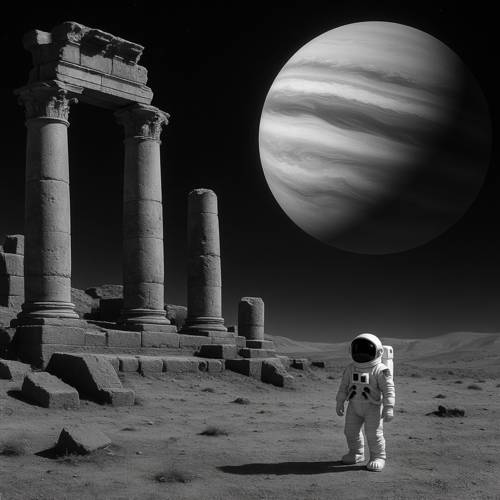
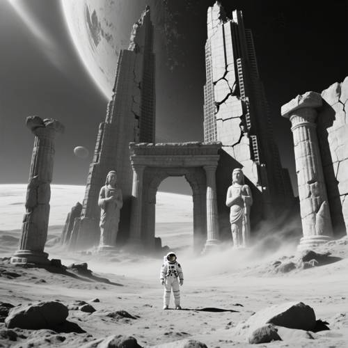
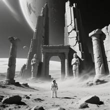

Style — Please generate a documentary black and white photo of a tiny astronau
Please generate a documentary black and white photo of a tiny astronaut standing next to the ancient ruins of a giant planet.

Direct — one call, no iteration

Continuum — Kimi K3 + Qwen-Image
Judge — Direct
PASSStyle — The image is presented in black and white, utilizing a full grayscale palette. The rendering of the scene, including the textures of the ground and ruins, the details of the astronaut's suit, and the lighting and shadows, gives it a realistic, photographic appearance, aligning with the 'documentary black and white photo' style.
FAILAttribute - Size — The image features a very large, striped planet in the sky, which visually represents a 'giant planet'. However, the astronaut in the foreground does not appear 'tiny'. Relative to the nearby ancient ruins, the astronaut has a scale comparable to a person standing next to large columns, rather than being depicted as diminutive to emphasize vastness.
Judge — Continuum
PASSStyle — The image is presented in black and white and has a realistic, photographic quality with high contrast, which aligns with the 'documentary black and white photo' style.
PASSAttribute - Size — The astronaut in the foreground is depicted as small in stature, appearing 'tiny' relative to the immense scale of the surrounding ruins, which include large statues, columns, and crumbling modern-style buildings. A large planet dominates the sky in the background, further contributing to the 'giant' scale of the scene.
What the agent did
Thinking
The user wants a documentary black and white photo of a tiny astronaut standing next to the ancient ruins of a giant planet. Let me think about this prompt. Key elements: - Documentary style (realistic, photojournalistic look) - Black and white photography - A tiny astronaut (emphasizing scale — the astronaut is small in frame) - Standing next to ancient ruins - The ruins are of a "giant planet" — meaning ruins on the surface of a giant planet, or ruins belonging to a giant civilization/planet I should generate with qwen-image, then inspect, then edit as needed. Let me craft a good prompt with visual detail. Prompt ideas: "Documentary black and white photograph, a tiny lone astronaut in a white spacesuit standing on the rocky surface of an alien world, dwarfed by colossal ancient stone ruins towering over him — massive broken columns, crumbling megalithic archways, weathered monolithic statues, cracked temple walls. High contrast monochrome film grain, harsh sunlight casting long shadows, desolate landscape, analog photography aesthetic, realistic photojournalism, vast sense of scale." Let me generate this. I won't set a seed per instructions. Size is controlled by harness, but I can pass width/height? The notes say "Do not set a seed. Sizes and seeds are controlled by the harness." So maybe I should omit width/height too and let defaults apply. I'll omit width/height to be safe. Then inspect the result, check details, mark best, and iterate if needed.
Model
I'll generate this documentary-style black and white image using the qwen-image model, then inspect and refine as needed.
Step 1 — `generate_image`
{
"prompt": "Documentary black and white photograph, photojournalism style: a tiny lone astronaut in a white spacesuit standing on the barren rocky surface of a giant alien planet, dwarfed by colossal ancient ruins towering far above him \u2014 massive broken stone columns, crumbling megalithic archways, weathered monolithic statues half-buried in dust, cracked temple walls the size of skyscrapers. Harsh directional sunlight, long deep shadows, high-contrast monochrome, visible analog film grain, desolate vast landscape stretching to the horizon, immense sense of scale, realistic 35mm documentary photo aesthetic.",
"model": "qwen-image"
}
Result img_0

Thinking
The first generation looks quite good. Let me analyze: - Black and white: yes, monochrome ✓ - Documentary style: it has a photorealistic look, film grain feel ✓ - Tiny astronaut: the astronaut is small relative to the massive ruins ✓ - Ancient ruins of a giant planet: massive broken columns, archway, statues — and there's a giant planet in the sky! Actually the "giant planet" appears in the sky, which is a nice interpretation — the ruins are on a planet/moon with a giant planet looming above. Wait — the prompt says "ancient ruins of a giant planet" — meaning the ruins belong to / are on a giant planet. The image shows colossal ruins with a giant planet in the sky. This works well both ways: ruins of giant scale, and a giant planet visible. Let me inspect details for artifacts. Things to check: - The astronaut: small in frame, standing. Looks like a proper astronaut with helmet. - The ruins: columns, arch, two statues flanking the arch — they look a bit like Egyptian/Greek statues. Nice. - There's a floating sphere/ball in the mid-left that looks slightly odd — a floating orb near the left column. Could be a moon or balloon-like object. It might read as a small moon. It's slightly odd but plausible as a distant moon. - Film grain and documentary feel: present. Potential issues: - The floating sphere might look like an artifact. Let me zoom in to check. - The astronaut details — check the helmet/backpack. Let me inspect regions: the astronaut and the floating orb. Overall this looks strong. Let me zoom into the astronaut and the orb to verify quality before marking best.
The astronaut crop looks great — a clean white spacesuit with helmet, chest pack, arm patch. Slight softness but reads well at full scale. The orb crop: it's an egg-shaped textured sphere floating in the sky. It reads as a small moon, though its proximity and shape make it slightly ambiguous. It could be interpreted as a small moon — in the context of the giant planet in the sky, a second smaller moon is plausible. It doesn't look like an artifact per se; it has surface texture like a moon. I think the image is strong. Options: 1. Accept as-is and mark best. 2. Try one improvement edit. The composition: astronaut centered, ruins towering, giant planet upper-left with ring light. The "tiny astronaut" requirement is satisfied — he is dwarfed by the ruins. The documentary B&W aesthetic is there. One nitpick: the astronaut could be even tinier for more dramatic scale, but he's clearly small relative to the colossal ruins. The prompt says "tiny astronaut standing next to the ancient ruins" — satisfied. Another nitpick: the floating egg-moon. It's fine as a moon. I could remove it but it's not wrong; it adds to the alien sky. Risk of edit: changing it might drift other parts. Per the stopping guidance: "Good enough is a stop condition." The image satisfies all elements. Let me check the statues near the arch too — they looked fine at full scale. Maybe inspect the upper ruins quickly? The cracked monoliths look intentionally ruined. I think it's good. I'll mark img_0 as best and stop. Actually, wait — should I double check anything else? The statues flanking the arch look like ancient robed figures — good "ancient ruins" cue. The giant planet in the sky sells "giant planet." I'm confident. Mark best img_0 and summarize.
Step 4 — `mark_best`
{
"image": "img_0",
"reason": "All requested elements present and correct: documentary B&W photojournalism style with film grain, a tiny astronaut clearly dwarfed by colossal ancient ruins (columns, arch, statues), a giant planet looming in the sky, and no visible artifacts after close inspection."
}
Thinking
Done. The image is marked. Summarize for the user.
Model
Here's your documentary black and white photo. The first generation came out strong, so I'm submitting it as-is: **What the image delivers:** - **Documentary B&W aesthetic** — high-contrast monochrome with analog film grain, harsh sunlight, and long shadows, like a frame from a photojournalist's expedition archive - **A tiny astronaut** — small in the frame, rendered in a detailed white EVA suit, standing alone in the dust and utterly dwarfed by his surroundings - **Ancient ruins of a giant planet** — colossal cracked monoliths, broken fluted columns, a monumental archway flanked by two weathered robed statues, all at a scale suggesting a long-vanished giant civilization - **The giant planet itself** — looming massive in the sky at upper left, its terminator line catching the light, with a smaller cratered moon drifting nearby I zoomed in to verify the astronaut's suit details and the smaller moon — both render cleanly with no artifacts. The marked image is the final result.